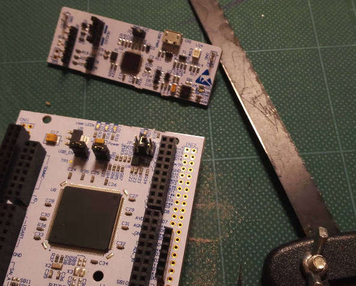
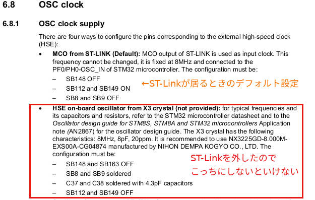
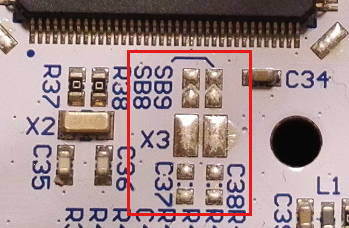
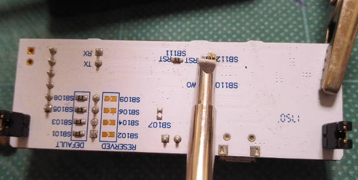
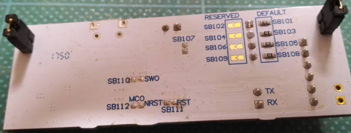
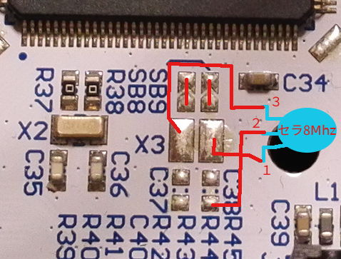
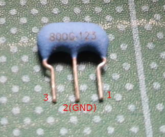
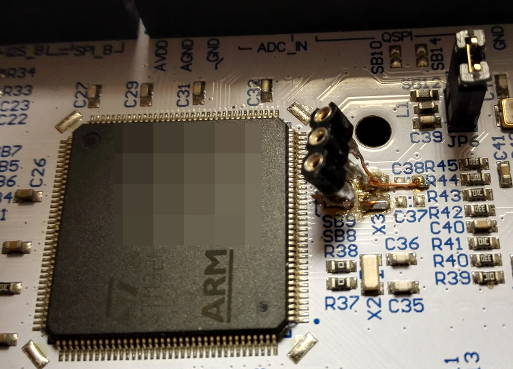
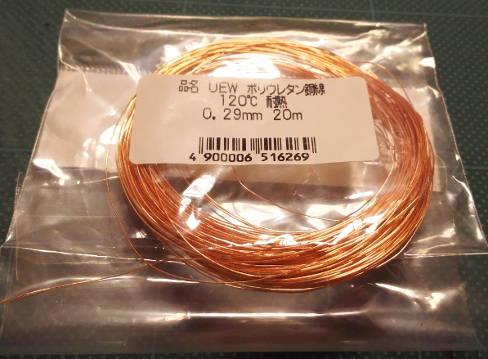

はい、以下は電子工作系の話です
某要件でSTM32Fほにゃらら(アレなんで伏せておきます)が乗っているNucleoというボードを使って色々しているわけですが、ここにきて動かしていると急にボードのリセットが掛かるという現象が起こり、このままでは開発もままならなくなったので、ついつい手が滑ってこのNucleoボードの上部に乗っかってるST-Linkというボードを切り離してしまった話です。
※闇雲にSTLinkが悪いんだって切ったというわけではなくて、回路図とにらめっこしながら、あるWindowsPCでST-Linkを活性化している場合に起こりやすいというところからどうもこいつがNRSTのレベル下げたり、各種いらんことをしているのでは？？という推論に基づいています。推論したら実行に移さないと気がすまないってのもあります。
Nucleo-144系ボードの話はまだそんなにネットになかったので、ネタになるかなと思い、以下、載せておきます。
STLinkと本体との切り離し
何はともあれ、まずはNucleoさんの基板の上にくっついてるSTLinkとSTM32Fが居る本体部分を物理的に切り離さないと進みません。
切り離す前はこんな感じになってます。

上部がST-linkですね。橋みたいなので繋がっておりますね。
一見何もなさそうですが、実は多層基板になっていて、この橋から本体にUSBからの電源供給線や、リセットやらSWDIOやらの各種信号が繋がっております。
STのマニュアルには「STLinkを外したい愚か者はこの橋を切断せよ」みたいなことがかいてあります…
ということで、ボクは当初カッターナイフで切ろうとしたのですが、思いの外大変だったので、釣りの時に使う、凍ったアミコマセを小分けする用途に100均で買った棒ノコみたいなので切りました。

切ったらこうなります。さすがに棒ノコだと簡単に切れますね。
あとはバリをヤスリで削ったら第一工程終わり。
なお、外したSTLinkは使えなくなってジャンク扱いになるの？？といえばそんなことはなくて、今後も外部デバッガとして利用できます。よかったですね。
つまり、Nucleoボードをスイッチサイエンスさんとか、秋月さんとかで買うなり、何らかの手段で手に入れればハードウェア接続なデバッガも付いてくるわけですな。ええ時代や…
チップ抵抗外しと、ソケット実装と…
これで終わりだったらとっても楽だったのですが、そうは問屋が卸さないという感じで、ST-Linkを外してしまった愚か者には罰があるのです。。。
回路図見たら「あっ、、、」ってわかるのですが、ST-Linkから供給されているMCOという外部高速クロック(8Mhz)が、ST-Linkを外してしまうことによって供給されなくなります。
まあ別にSTのチップは外部からクロックを供給されなくても最悪自分自身でクロックを供給できるようにはなってるのですが、USBデバイスとして機能させる場合など正確な高速クロックが必要な場合は、何らかの手段で外からクロックを供給しなくてはいけないみたいです。
今回の事案もUSBデバイスとして利用するというのがあったので、何らかの手段でクロックを供給せねばなりませんでした。
ということで、STのマニュアルには以下のように書いてあります。

つまり、今までST-Link基板が繋がってるときはオレンジで書いてある設定だったけど、外すと赤色で囲った設定にしないといけないよ…ということです。
回路図見るとこんな感じですね。

SB149は0抵抗で繋がってるのでこれを外します。
で、SB8と9は未実装になっているので、何らかの手段でブリッジします。
X3に普通の水晶振動子を使用する場合は、C37と38に所定のコンデンサを接続する必要があるのですが…まぁコレ見てくださいよ

工作しなきゃいけないのは、赤で囲ったところですね。
写真では拡大して映しているので「ふーん」って感じですが、実際はかなり小さいです。
正直、ここに砂粒みたいなチップコンデンサを付ける自信というか腕は皆無だったので、実はコンデンサ不要(実は内蔵されている)のセラロックというセラミック振動子(振動器かも)を使って逃げることにしました。
セラロックはコンデンサを付けなくても良いのですが、GNDと接続する必要はあるのでC37が乗るであろうパターンのGNDパターンに接続しようという形になりました。
ということで、まずは0Ωなチップ抵抗を外す作業から…
といっても、チップ抵抗をどうにかするのは久しぶりで、ましてや外した作業なんてしたことがなく、これは練習が必要だなぁと思い、、切り取ったST-Linkの基板で練習…(切り取ってしまえば外す意味はあまりないのですが、こいつをST-Linkデバッガとして新しく活用したい場合は、ノイズ云々の理由で一応外す必要があるそうです)
最初は使い慣れているこのハンダこて(15w)で作業しようと思ってました…

ところが、、、いざチップ抵抗を外す作業となるとどう頑張ってもこいつでは外せないことが判明。
なんでだろうなあ〜と思ってネットを調べていると、どうやら「ハンダを流しつつ、両方の端子を同時に温めないと取れない」という事がわかり、えっそれって合体前に同時に弾を打ち込まないと壊せないスターソルジャーのラザロみたいじゃないか…と早速難問が立ちはだかります。。。
いやぁさすがにヒートガンは持ってないし、世の中の人はどうしてんだろうなあと思ってYoutubeを漁ってると良い動画を見つけました。
ようは、ヘラ状のコテ先を使えば同時に暖められるじゃんという発想ですね。
これを発見したときは「はぁ〜こんな方法があるのかぁ。。。これなら他の部品温めて死ぬ事無いしキレイだし凄いなぁ。。。」と目から鱗が瀧のように流れました……
ということで、流石にヘラ状のコテ先は持ってなかったので、ホームセンターに無いかなと探しに行きました。
そしたら奇跡的に以下の商品があり、迷わず購入。

20wでコテ先が色々入ってました。ハンダ付け用のとかヒートカッターとか色々入って2000円くらい。
お子様向けみたいなことが書いてありましたが、小さくて使いやすそうで、細かい電子工作にも良いんじゃないかなと。
それで、コテ先はヘラ状のも入ってたので装着して当ててみると、狙ったようににピッタリ

こりゃいけるぞ…ということで、温めつつ新しいハンダを流すとやっとチップ抵抗が取れました

なお、パスコン(VCCとGNDに挟まってる安定用のコンデンサ)との比較画像はこんな感じです

本当に米粒というか砂粒なのが解ると思います。
我々が普段手にしているスマホにはこういうのがそりゃもう沢山入っております。
取った後のST-link基板はこんな感じになりました

SB110〜112に付いてたチップ抵抗を外しました。外した直後はハンダのペースト(ヤニ)がついてて茶色いですが、爪でガリガリするなりアルコールかなんかで拭き取るとキレイにとれます。
ST-link基板で修行を積んだので、本チャンと行きます。赤で囲った部分がターゲットです。

SB149は周囲に部品が無いのでまだ余裕。
SB163は近所にコンデンサがあり、ここに誤爆して外した抵抗と合体したりすると本当にダメなので、反対側のSB160は巻き添えにしても良いように方向を考えて作業しました。
やはりSB163はボクには難問鬼門で、以下画像にも格闘の跡が見えておりますが、、、なんとか除去成功。

テスターでチェックして問題ないことを確認。これで第二関門クリア
そしていよいよ最大にして一番むずかしい発振器周りです。
どのようにつなげるかは以下の通り。

スペース的にも正直なかなかキツイですがやっていくしかありません。
なお、「セラ8Mhz」と書いてあるのはセラロック8Mhzでして、実物これです。

セラロックは一応極性というか向きはあるそうで、2はGNDに接続しないといけないのは当然として、1はCPU側のOSC_OUT、3はOSC_INに接続しないといけないです。
OUTに1を接続するとかなんとも不思議な感覚になりますが、そうしないと波形がズレてしまうらしいですはい。
参考→逆方向に実装した場合、問題が発生しますか？｜村田製作所
8Mhzから変えることはあまりないと思いたいけど、もしかしたらもあるから一応簡単に付け替えられるようにしておこうと思い、ソケットを付けて色々実装頑張ったらこうなりました。

ちなみに、配線はこれを使ってます。秋葉にある秋月電子さんやら千石電子さんに売ってますし、大阪だと多分デジットなんかにあるかなーと。

むき出しのように見えて、実はポリウレタンで薄く皮膜してあります。
皮膜してあるので普段は導通しないわけです
なお、皮膜はハンダの熱で溶解して中の銅線と導通可能になるので、作業前に線をメッキハンダ(線にハンダを付ける作業)をするだけで良いということに。
つまり、ワイヤーストリッパーなどでビニールを剥くといった作業をしなくて良いわけですね。
とっても細かいランドに信号線を飛ばさないといけない時やら、数こなさないといけないバスラインを接続する場合にすごく重宝します…というかこれじゃないとあたしゃ無理ですわ正直。
若干話それましたが、最終的にソケットにセラロックを収めてこうなりました。

テスターで確認して問題なければこれにて終わりです。
あ、あと電源もST-linkから供給されなくなったので、どうにかする必要は有ります。
ボクはUSBケーブルを剥いてE5Vにその電源を入れることにしました。
E5VはCN11端子に出ております。この辺はまあ解説しても面白くないので略。
シリアルもUSART3から他になってしまうので、シリアル出したい場合はこの辺りも考える必要は有ります。USART3はCN11とかにも出てますが、USART3は何をトチ狂ったかTXとRXが遠すぎる(CN11と12にまたがってる…)ので、CN9にまとまって出てるUSART2を活用すればスマートにできます。
ソフト側の変更など…
このままでも動くことは動くのですが、このままではクロック設定に失敗して内部クロックを勝手に使うことになって苦労して付けた意味がなくなってしまうので、ソフトも若干の変更が必要になります。
多分ST提供のIDE(CubeMXなど)を使ってるとNucleoのデフォルト設定だとMCOが生きている状況で、直接方形波のクロックが入ることになるので、HSEはMCOを使う設定になってます。
セラロックから出てくる波形は方形波じゃなくて純粋な波なので、これを教えないといけません。
ソフト面での変更方法ですが、CubeMXのGUIではHSEの設定がBypassになってるはずなので、それを変更するか、もしくはソースの以下行
をSrc/main.cRCC_OscInitStruct.HSEState = RCC_HSE_BYPASS;
に変えればOKです。Src/main.cRCC_OscInitStruct.HSEState = RCC_HSE_ON;
これをビルドし直して焼けばOK。
あと、USART2使う人はそれ用の変更するなどですね。
まとめなど
ということでブログにすると長くなりましたが、作業は実際半日かかってしまいました。
なお、無事にクロックも供給できて、USBデバイスのテストアプリを焼いて無事に動くことを確認しましたので、同じ症状で困ってる人の参考になればと…
後日、切り離したSTLinkを使ってみましたが、どうやらNRSTを接続すると不意に信号がローに落ちる場合があるようで(NRSTは負論理なのでしばらくローになるとリセットが掛かったということになります)、レアを引いてしまったか、もしくはST-Linkを接続している自分のPCとの相性が不味いのか…といった感じです。
同じ症状が無いかと思い、ネットを漁ってると一部のUSB3.0ホストとの相性が良くないらしいというのを見かけたりもして、どうかなーといったところ。
他の会社のデバッガを実は持っていて、こいつはNRST繋げてもこういった状況にはならずサクサクイケるので、まあこれでいいかーということに落ち着きました。